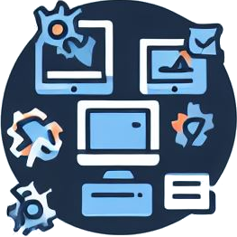

How can we be useful to you?

In today's business world, technology is an essential component for the efficient operation and sustainable growth of any company. Although there are numerous software tools that facilitate the automation processes of our work, all of them have a generic nature and most of the time we need to complement several to try to create a computer system that covers the specific needs of our work and, even so, there are always elements left out of the process in addition to the increased probability of errors due to the necessary transition of information between programs that, as a rule, were not created with the idea of compatibility.
Having software designed and implemented specifically for your business needs offers a number of significant advantages that can make a difference in the success and efficiency of your company.
CodeLink ANU offers you support from minute 0 in the analysis of your information flow and the study of the most effective methods for capturing and validating it. Which will allow you to implement computer tools that put in your hands true and timely information that helps enhance the profitability and efficiency of your business.
For them we offer:
Information Technology Consulting
We provide personalized consulting services to help you make informed decisions about your systems and technology needs.
Whether you are looking to optimize your business processes or need strategic IT advice, we are here to help you achieve your goals.
Project management
They are ready to lead and supervise your technological initiatives or suggest the design that best suits your information flow.
We can also advise you on your own projects from planning to execution and delivery, ensuring they are completed on time and on budget. We manage resources, scope and schedule to ensure success.
Software Development and Programming
Our team of highly trained developers is ready to create bespoke applications and software that fit your specific requirements.
Whether you need a web, mobile or desktop application, we can develop custom solutions that drive the efficiency of your processes and deliver exceptional user experiences.
Comprehensive Technical Support
Keep your business running smoothly with our world-class technical support service.
We offer immediate assistance to resolve hardware and software issues, ensuring minimal downtime and seamless workflow.
Network Design and Assembly
We design and build robust and efficient network solutions that adapt to the needs of your company.
From local area networks (LAN) to wide area networks (WAN) and wireless networks, we provide you with the infrastructure necessary to keep your operations running smoothly.